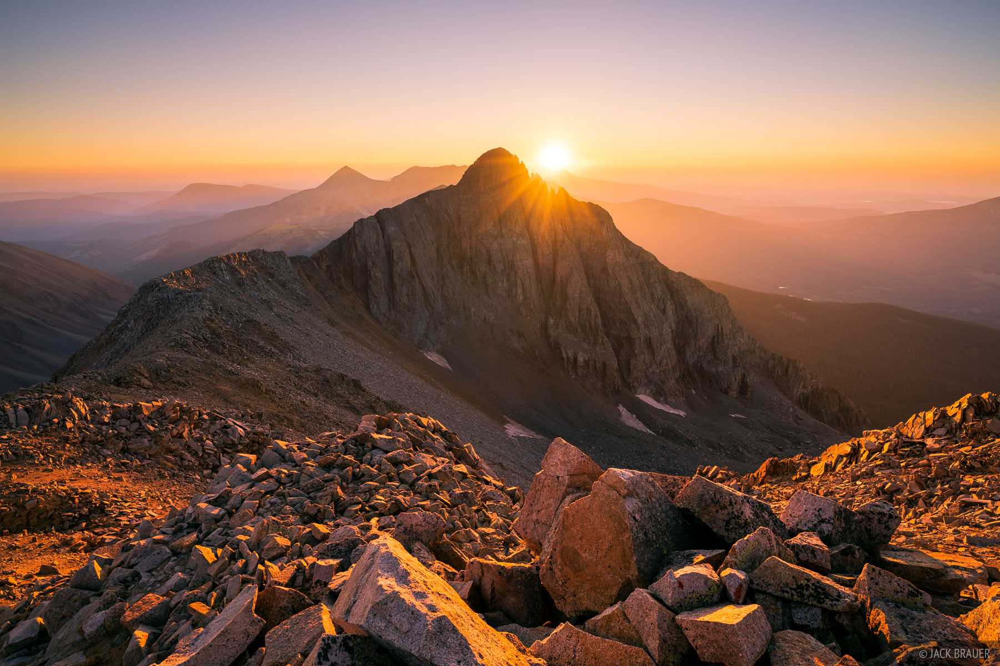
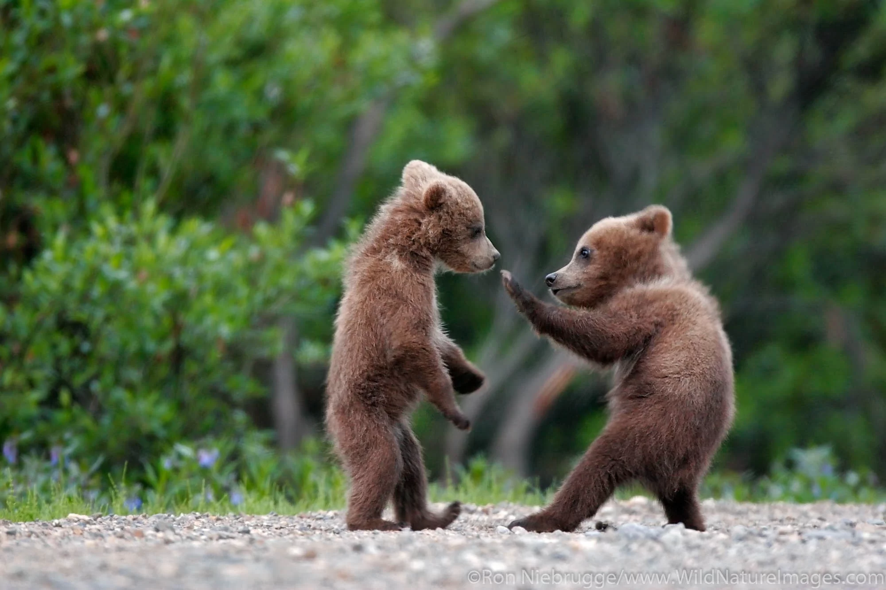
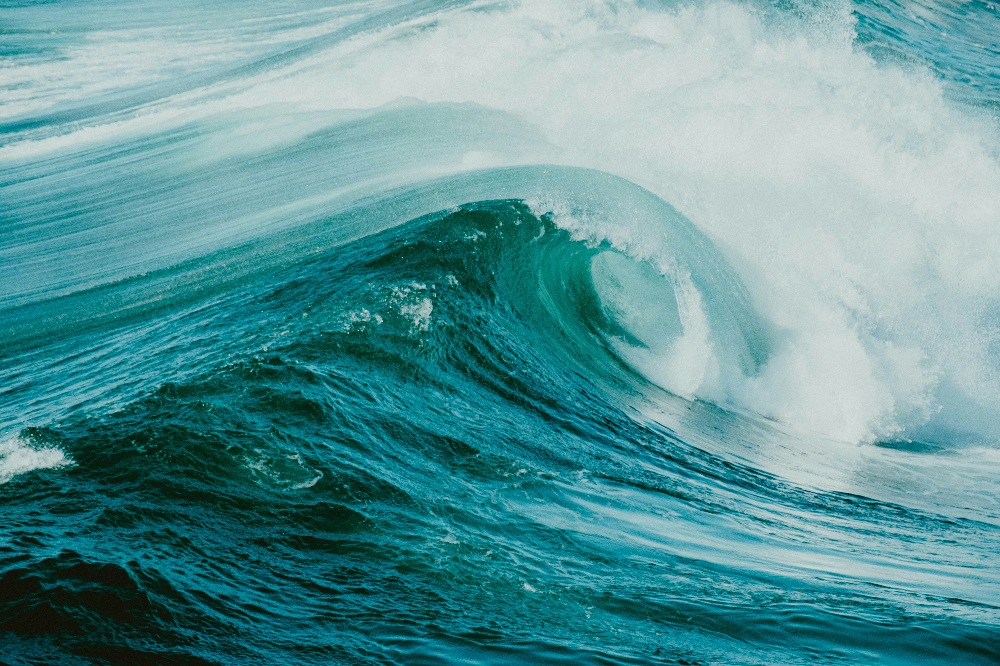
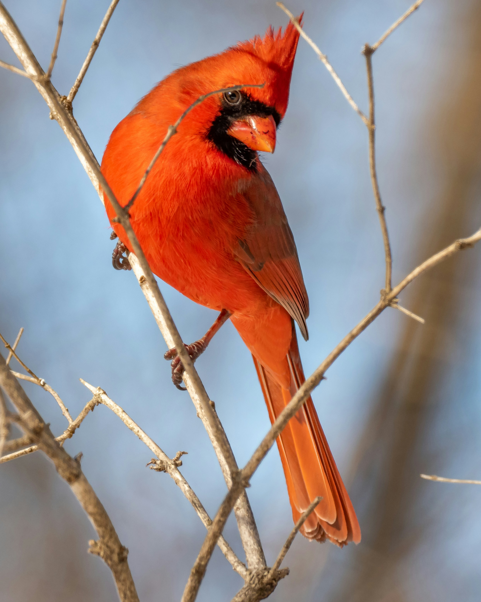
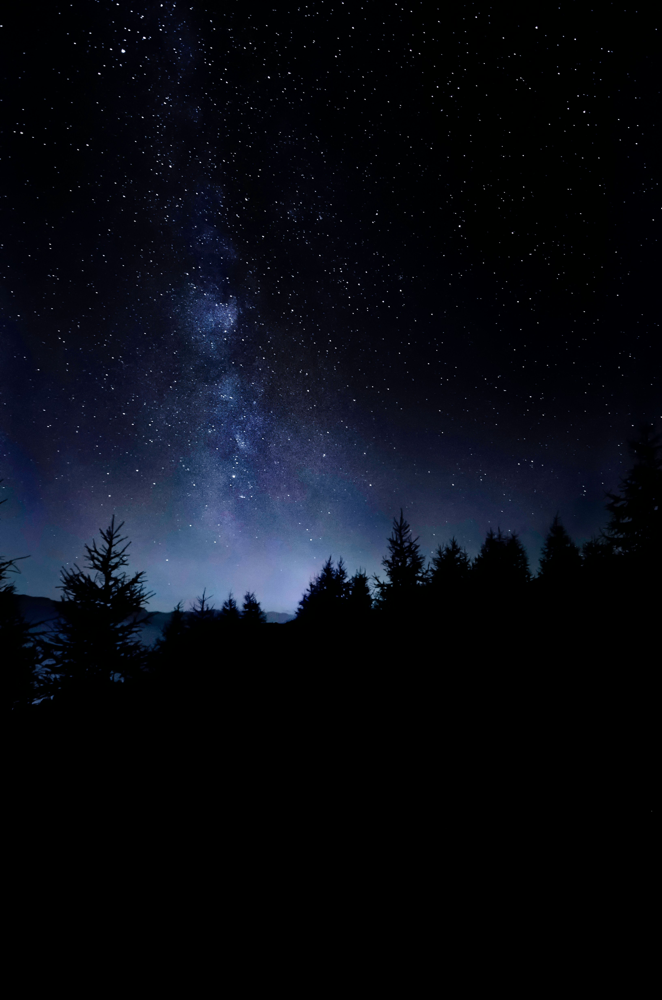

Welcome to Photoland!
Share your world, one photo at a time.
Recent Uploads

Mountain Sunset
by Jack Brauer
128 likes 2.4k views

Grizzly Bears
128 likes 2.4k views

Waterfall Bridge
128 likes 2.4k views

Ocean Wave
128 likes 2.4k views
Chicago Skyline
by Pedro Lastra
128 likes 2.4k views
White Daisy
by AARN GIRI
128 likes 2.4k views

Red Cardinal
128 likes 2.4k views

Starry Night Sky
128 likes 2.4k views